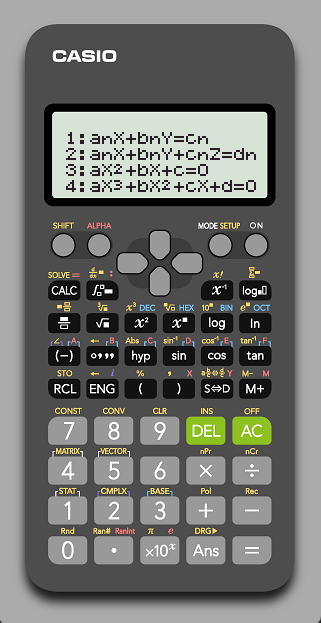
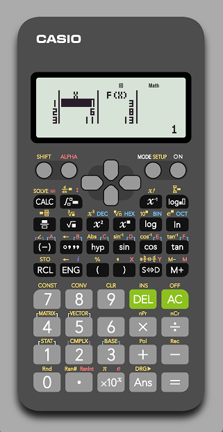
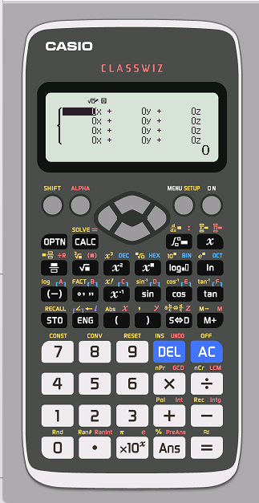
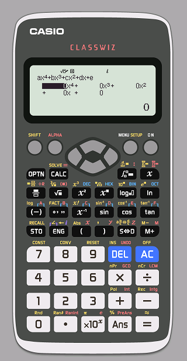
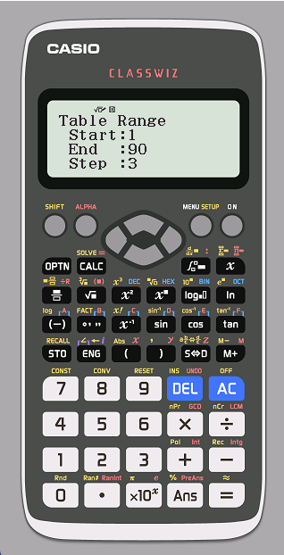

| Quảng cáo |
Với máy casio-570
Giải phương trình

- Đầu tiên nhấn MODE -> 5 (EQN)
- Chọn 3 hoặc 4 tương ứng với phương trình bậc 2 hoặc bậc 3
- Điền hệ số rồi nhấn CALC hoặc = để giải
Giải hệ phương trình
- Đầu tiên nhấn MODE -> 5 (EQN)
- Chọn 1 hoặc 2 tương ứng với hệ phương trình 2 ẩn hoặc 3 ẩn
- Điền hệ số rồi nhấn CALC hoặc = để giải
Bảng giá trị hàm số

- Đầu tiên nhấn MODE -> 7 (TABLE)
- Nhập hàm f(x)
- Chọn điểm bắt đầu (Start) và điểm kết thúc (End) của hàm số
- Cuối cùng chọn giá trị của mỗi bước của hàm số (Step), lưu ý là bảng của máy casio-570 chỉ chứa được tối đa 20 hàng
Với máy casio-580
Giải phương trình

- Đầu tiên nhấn MODE -> 9 (Equation/Func)
- Chọn 2 (Polynomial)
- Chọn bậc của phương trình (2-4)
- Điền hệ số rồi nhấn CALC hoặc = để giải
Giải hệ phương trình

- Đầu tiên nhấn MODE -> 9 (Equation/Func)
- Chọn 1 (Simul Equation)
- Chọn số ẩn của phương trình (2-4)
- Điền hệ số rồi nhấn CALC hoặc = để giải
Bảng giá trị hàm số

- Đầu tiên nhấn MODE -> 8 (Table)
- Nhập hàm f(x)
- Nhập hàm g(x) (nếu không cần thì để 1 cũng được)
- Chọn điểm bắt đầu (Start) và điểm kết thúc (End) của hàm số
- Cuối cùng chọn giá trị của mỗi bước của hàm số (Step), lưu ý là bảng của máy casio-580 chỉ chứa được tối đa 30 hàng
|
Quảng cáo |